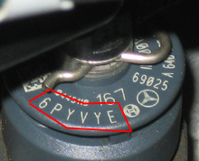

Since individual injectors have different properties the engine's electronic control unit corrects the injection time for each cylinder to improve injection accuracy. Corrected data is converted to an identification code containing 6 digits/letters stamped on the top of the injector.
Note:
Fault at registration of injector identification code will entail rough idling, abnormal engine noise, and poorer emissions.
Test conditions:
Ignition on.
Procedure:
Ignition on.
Select the function, "Injector programming".
The old registered codes are shown.
Select the cylinder on which the injector is replaced.
Enter the 6-digit code from the new injector, see figure.

The new registered code is shown.
When replacing more than 1 injector, select "Yes", otherwise "No".
In the next step, a zero quantity calibration and a fuel adaptation will be performed.
Start the engine.
Calibration is done automatically when the following conditions are fulfilled.
Engine rpm between 1900 - 2500 rpm.
Accelerator pedal not pressed down.
Brake pedal not pressed down.
Fuel adaptation is done automatically when the following conditions are fulfilled.
Engine started.
Erase any fault codes.